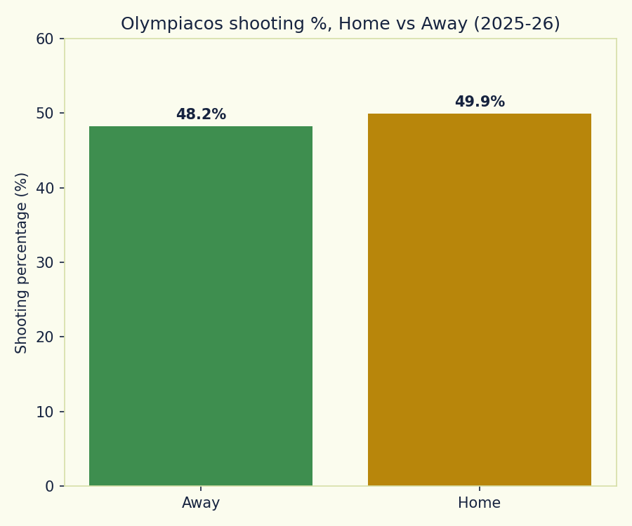
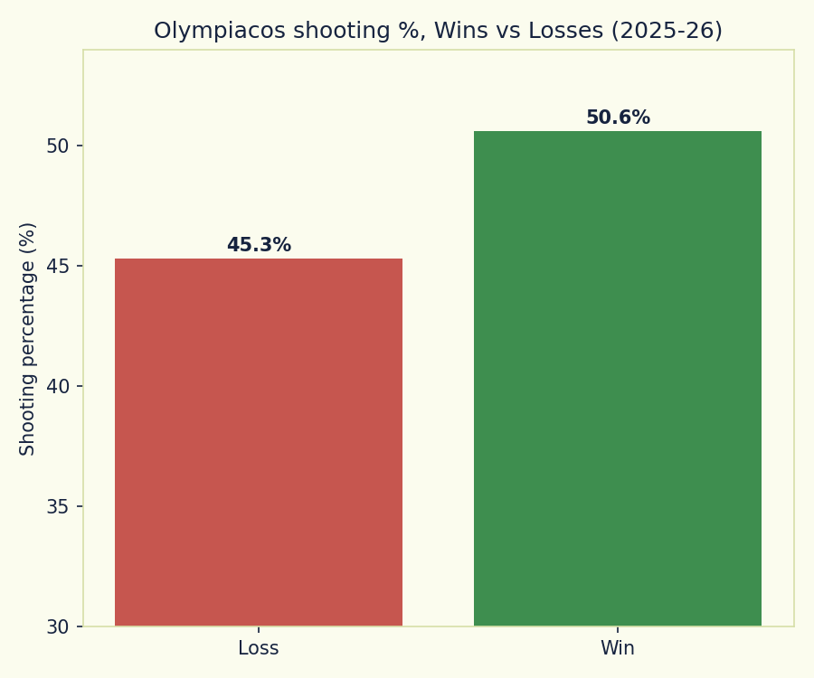
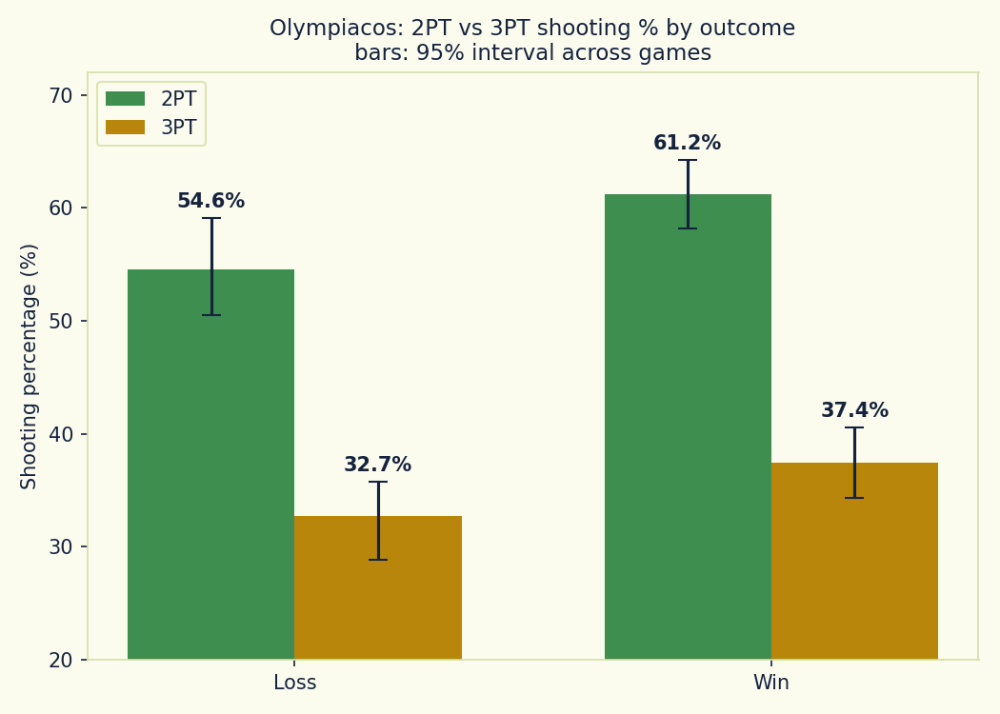
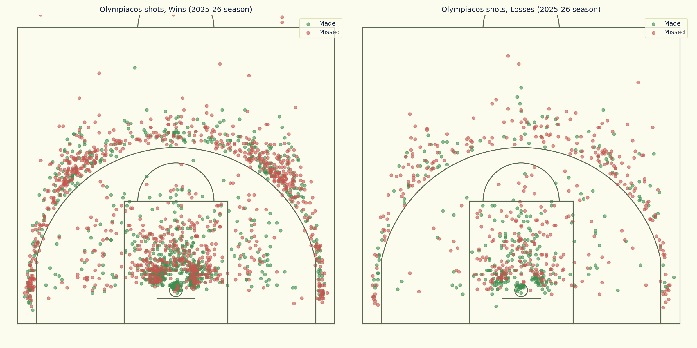

A data-driven look at Olympiacos Piraeus' championship-winning season, exploring shooting patterns, efficiency, and what separates their wins from their losses.
Olympiacos won the 2025-26 EuroLeague title, becoming the first regular-season top seed to win the championship under the current format. This project analyzes all 43 games of their season (regular season, play-in, playoffs, and Final Four) using shot-level data: every field goal attempt, with court coordinates and outcome.
Before looking at wins and losses, it's worth understanding where Olympiacos shoots from. The distribution is a clear example of modern shot selection.
| Zone | Share of shots |
|---|---|
| Paint | 46.3% |
| 3-point | 43.9% |
| Mid-range | 9.7% |
Nearly all shot attempts come from the two most efficient areas of the floor, close to the rim or beyond the arc, with mid-range shots reduced to under 10% of total attempts. This distribution stays essentially the same whether Olympiacos wins or loses (mid-range: 9.1% in losses vs 10.0% in wins), suggesting shot selection is a stable team identity, not something that shifts based on how the game is going.

Olympiacos shoots only marginally better at home (50.0%) than on the road (48.2%). A small gap that suggests the team's shooting efficiency isn't heavily driven by home-court advantage.

The picture changes when looking at outcome instead of venue. Olympiacos shoots 50.7% in wins versus 45.3% in losses: a meaningful 5.4-point gap.
Interestingly, this isn't a matter of shooting more in wins. Shot volume is nearly identical regardless of outcome.
| Outcome | Shots per game |
|---|---|
| Win | 63.4 |
| Loss | 63.1 |
The difference is entirely about efficiency, not attempts.

| Shot type | Win % | Loss % | Gap |
|---|---|---|---|
| 2PT | 61.3% | 54.6% | +6.7 |
| 3PT | 37.4% | 32.7% | +4.7 |
This is a notable detail: the common assumption might be that three-point shooting swings games, but for Olympiacos the bigger swing happens closer to the basket. When the team struggles, it struggles most to finish around the rim, not just from deep.

Visualizing every shot attempt confirms the shot selection pattern from earlier: both panels are dominated by paint and 3-point attempts, with barely any mid-range shots. The wins panel simply shows more dots overall, but that reflects Olympiacos winning far more games than it lost that season, not a difference in shots taken per game. The meaningful difference between the two panels is the make/miss ratio, consistent with the 5.4-point efficiency gap already discussed.